The measurement tool in OMERO.insight is used to draw Regions of Interest (ROIs) and perform some basic analysis.
OMERO.web allows you to view existing ROIs, but not edit them or create new ones.
Open the image in the Image Viewer and click on the Measuring Tool icon to open the tool palette.

Use the ROI selector icon to select ROIs for analysis, resizing, reshaping or moving on image.
Select the appropriate tool to draw rectangular, ellipse, point, line or polygon ROIs.
Text ROIs can be added with the text tool.
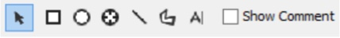
Click on the Rectangle or Ellipse icons in the tool bar to draw a rectangular or elliptical ROI.
Use the corners or edges to resize the ROI.
Use the selection tool to move ROI on image.
Double-click on the ROI to add a label to the ROI.
Use the Show Comment checkbox in the toolbar to toggle labels on and off.
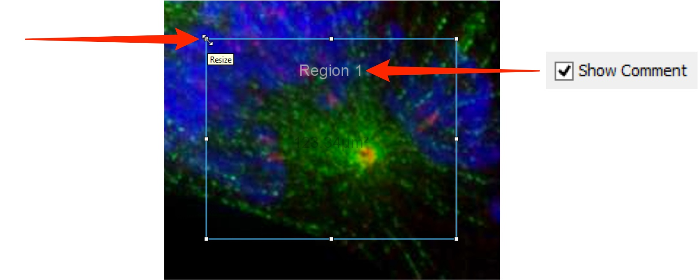

On elliptical ROIs click on and drag the green dot at the top to rotate the ellipse.
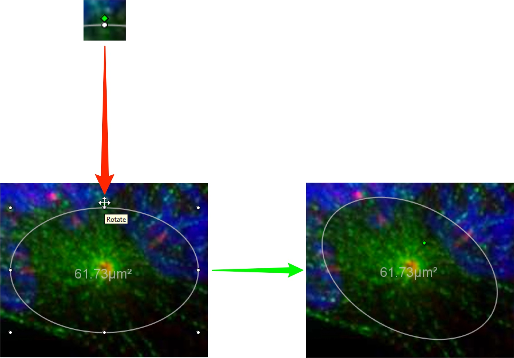
Double-click on a line ROI to insert an additional point into the line.
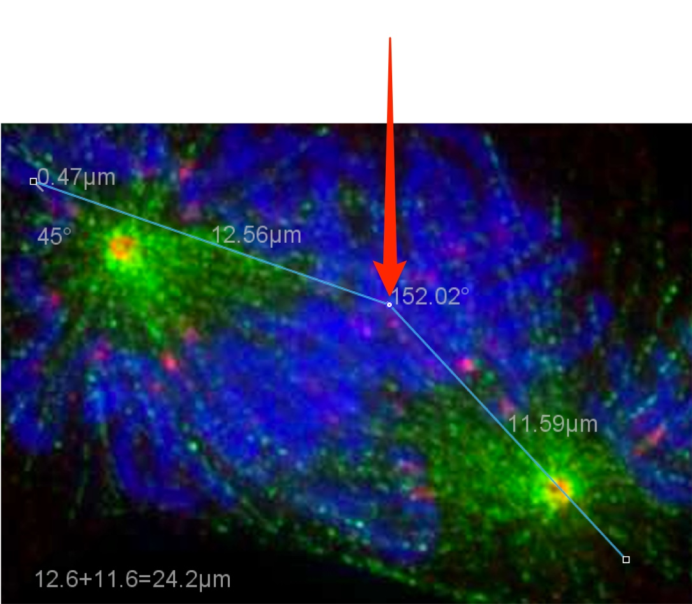
Ctrl-click (Windows) or Cmd-click (Mac) changes the type of a point.
The default type is an edge point, with collinear control point, unconstrained control point and quadratic curve point the other options.
Point types other than the default edge point, have Bezier controls that allow the line adjacent to the point to be curved as needed e.g. to pass through specific structures.
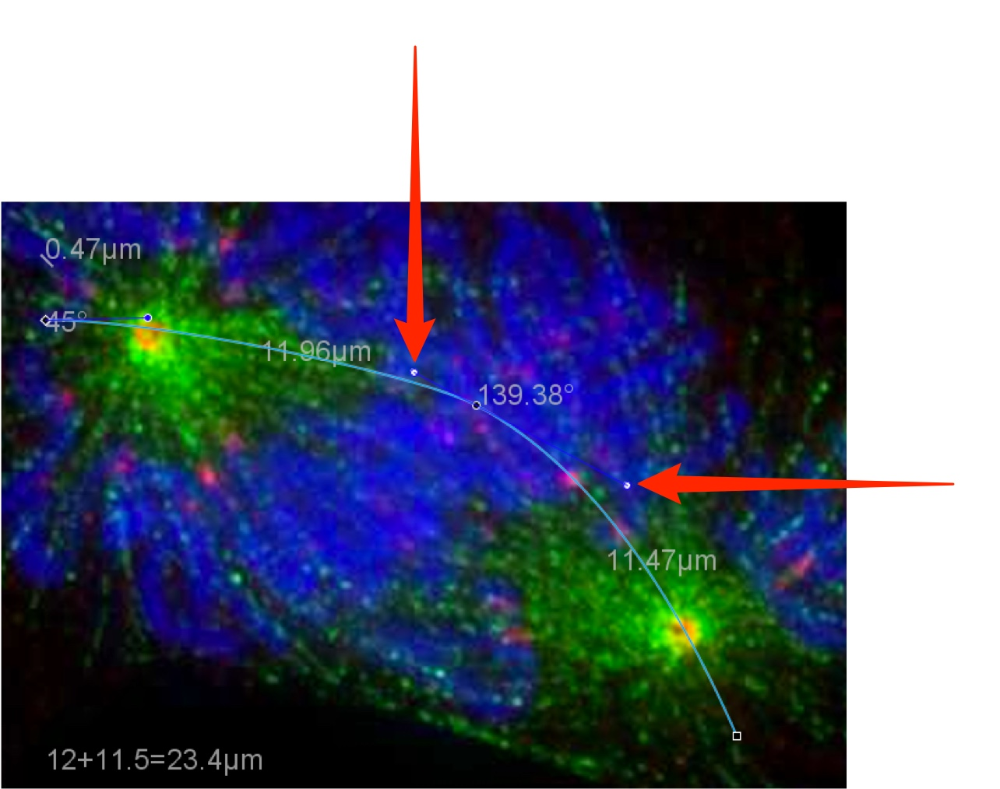
Click the Polygon icon, click on the image, and then click again to start drawing a polygon ROI on an image.
Each subsequent click will draw another point.
The type of any point on a polygon ROI can be changed by Ctrl-click or Cmd-click, and the line curved using the Bezier controls.
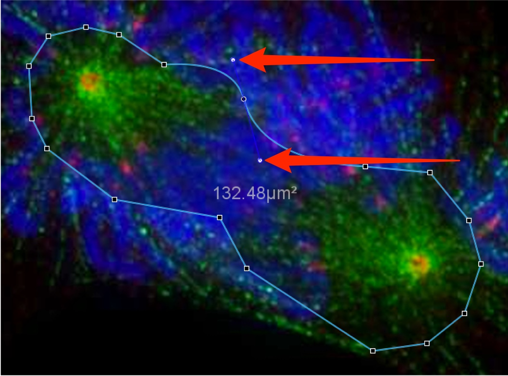
Right-click on any ROI to use the contextual menu to perform the operations available.
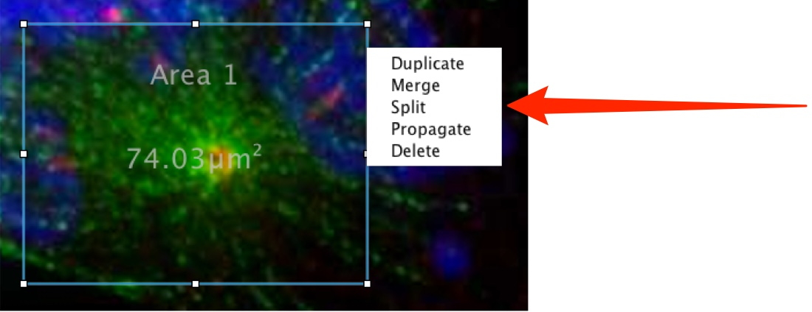
Click on the Save icon to save ROIs.
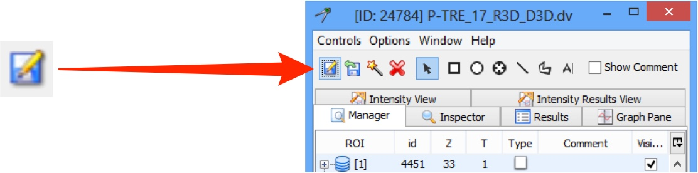
Click on the Upload icon to upload ROIs from an external file.
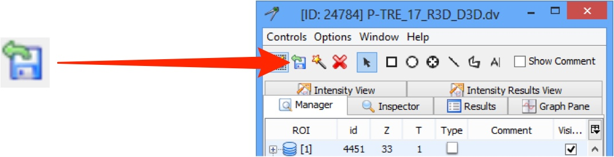
Click the Delete button to delete all ROIs on an image.
Right-click on an individual ROI and select Delete to delete only a single ROI.
Select multiple ROIs, right-click and select **Delete** to delete those ROIs.
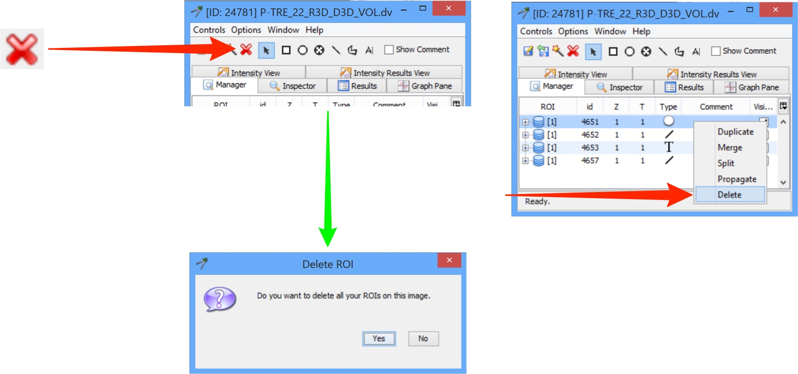
Details of ROIs are viewed in the **Manager** tab of the tool palette.
The columns show:
- ID of the ROI
- Z sections and time points the ROI is drawn on
- ROI type
- text associated with the ROI
- check box to toggle the visibility of the ROI.

Select an ROI and click on the Inspector tab to view and edit the text label, dimensions, fill and line colour, and toggle the visibility of the text and measurements on and off.

Click on the Graph Pane tab to show a plot of the channel intensity values for an ROI.
A line ROI has a profile of intensity values along the line and a histogram of intensity vs. frequency (other types of ROI show only the histogram).
If an ROI is propagated across Z sections or time points, the sliders to the left of the histogram allow stepping through the sequences.

Click on the Intensity View tab to see tables of intensity values for the ROI.
>These values can be exported in Excel format for further analysis.

Click on the Intensity Results View tab to see tables of intensity values for the ROI.
Click Add Selected to show results for the selected ROI.
These values can be exported in Excel format for further analysis.
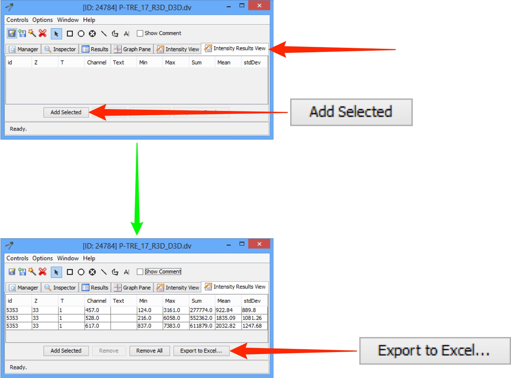
Viewing ROIs in OMERO.web
ROIs cannot be drawn in OMERO.web, but can be viewed, along with basic line plot of channel intensity values.
Open the image in the Full Viewer.
Click the Show ROIs link at the bottom of the toolbar.
The ROIs palette opens in the top left corner.
Toggle visibility on and off using the checkboxes.
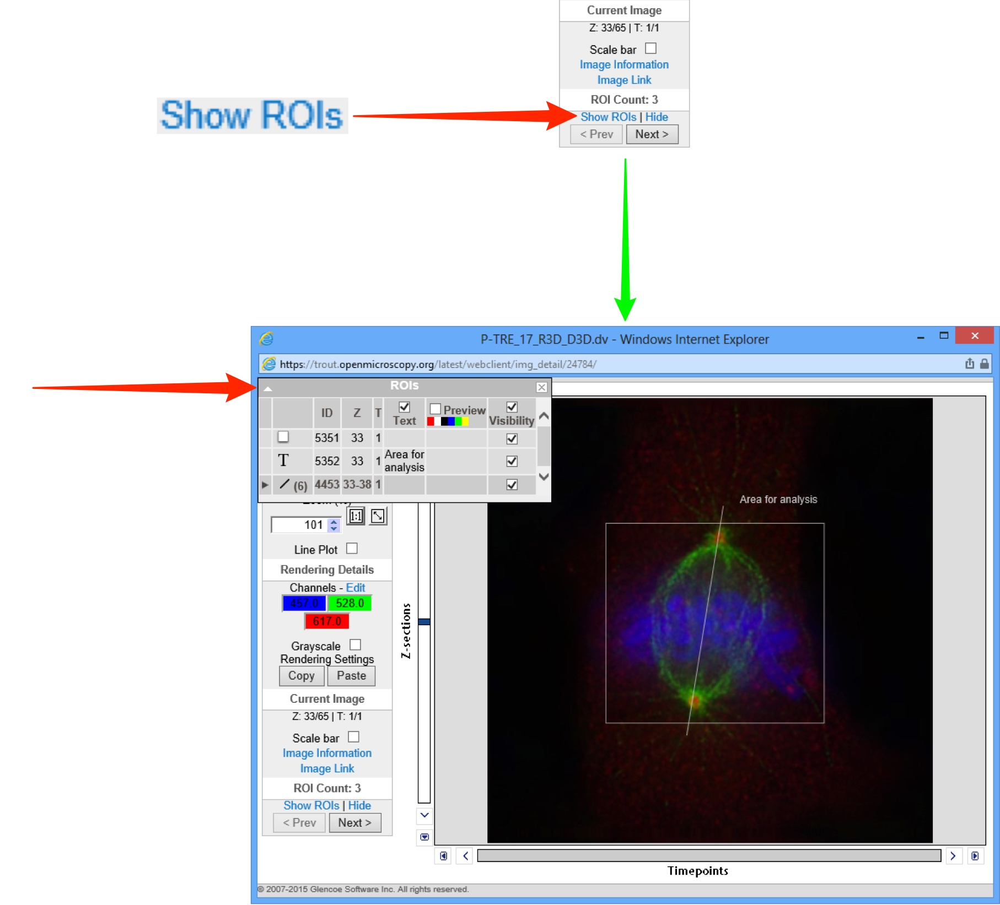
Click on the Expansion Arrow on propagated ROIs to show the shapes on Z sections or time points.
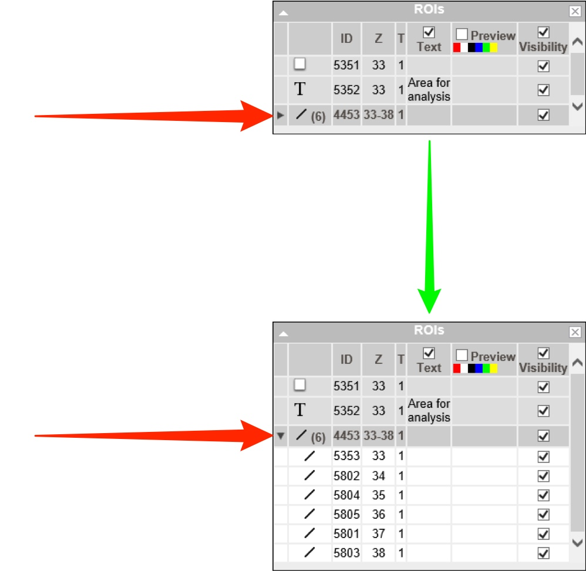
Click the Line Plot check box to show a line plot on the image.
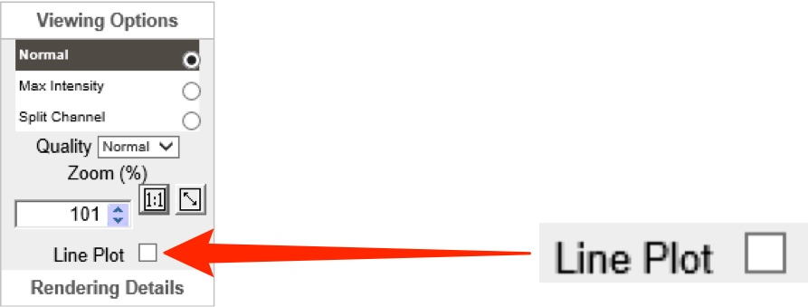
Select orientation from the Axis drop-down.
Click Apply.
Enter the desired X or Y coordinate in the text box and click Apply or click on a point in the image to set the line plot position.

All Tutorial Material is available on line at: help.openmicroscopy.org
The Main OME website is at: www.openmicroscopy.org